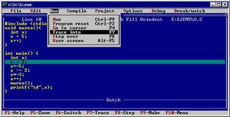
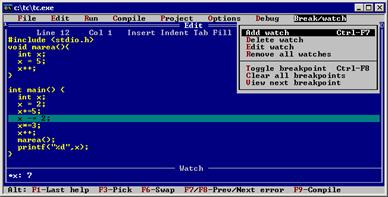
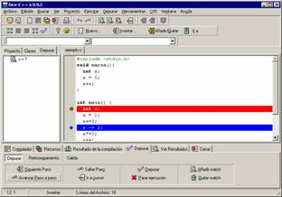
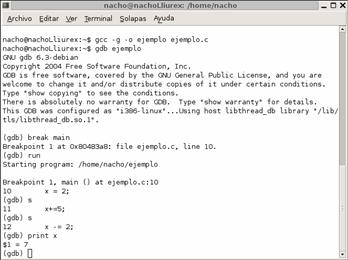
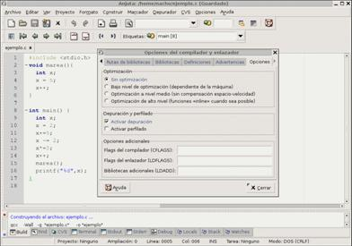
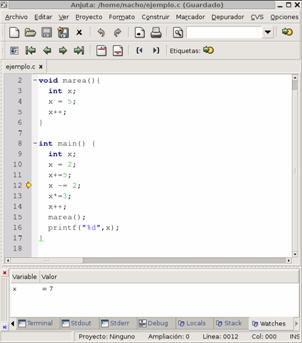

Turbo C es un compilador antiguo, pero sencillo de manejar, y la depuración también es sencilla con él:
El menú “Run” es el que nos permite poner nuestro programa en marcha normalmente (“Run”), pero también el que nos permite avanzar paso a paso por las órdenes que lo forman.
Hay dos maneras de hacerlo:
En cualquiera de ambos casos, se nos muestra con una línea azul por dónde va avanzando la depuración.

Si queremos observar cómo evoluciona el valor de alguna variable, podemos añadir un “vigía” (en inglés “watch”) desde el menú “Break/Watch. Este vigía quedará en la parte inferior de la pantalla.

Si trabajamos con DevC++ para Windows, la situación no es muy diferente. Primero debemos indicar dónde queremos que se interrumpa el programa (añadir un “breakpoint”), haciendo clic con el ratón en el margen izquierdo de nuestro programa. Esa línea quedará resaltada en color rojo.
Ahora ponemos en marcha el programa desde el menú “Depurar”.
En la parte inferior de la pantalla aparecerán botones que nos permiten avanzar paso a paso, saltar las funciones o añadir un “watch” para comprobar el valor de una variables. La línea que estamos depurando se marcará en azul (y destacada con una flecha). Los “watches” estarán visibles en la parte izquierda de la pantalla.

Bajo Linux, el entorno estándar (pero incómodo) es el de la herramienta “gdb”. Para usarla primero debemos compilar nuestro fuente como siempre, pero añadiendo la opción “-g”, que se encarga de incluir en nuestro ejecutable toda la información adicional que el depurador necesita para poder mostrarnos cual es la línea que estamos procesando:
gcc –g ejemplo.c –o ejemplo
Después ponemos en marcha el depurador, indicándole el nombre del programa a depurar:
gdb ejemplo
Deberemos indicar un punto de interrupción, con la orden “break”. La forma más sencilla de usarla es indicando una función en la que queramos que se interrumpa nuestro programa. Si nuestro programa no tiene funciones auxiliares o bien si queremos depurar desde el principio, usaríamos la función “main”, así:
break main
Podemos en marcha el programa con la orden “run”:
run
Se parará al llegar al punto de interrupción, y a partir de ahí podemos usar la orden “step” (que se puede abreviar con “s”) para avanzar paso a paso, o la orden “print” si queremos ver el valor de alguna variable:
print x

Si usamos otra herramienta de desarrollo, como Anjuta, la depuración puede ser mucho más sencilla, similar al caso de Turbo C y al de DevC++.
En este caso, podemos depurar fácilmente desde el propio entorno de desarrollo. Aun así, el primer paso es el mismo que si fueramos a usar gdb: debemos compilar con la opción –g. La forma más sencilla de hacerlo es indicar que queremos “activar la depuración”, desde el menú “Opciones”.

Entonces ya podemos construir nuestro ejecutable normalmente, e iniciar la depuración desde el menú “Depurador”.
Podremos avanzar paso a paso (desde el propio menú o pulsando la tecla F5), y añadir “watches” para observar cómo evoluciona el valor de las variables.
Estos “watches” no estarán visibles hasta que no escojamos la pestaña correspondiente en la parte inferior de la pantalla.
La línea que estamos depurando se indicará mediante una flecha en su margen izquierdo.

//-->